An internal product platform built across the full stack
I worked with Unilever Information & Analytics to build a bespoke internal product and services catalogue for teams across the global Unilever network.
The project went well beyond the frontend. I built the application across Vue, Node.js, Express and MySQL, including the REST API, data-heavy product interfaces and a custom CMS used to manage the content and data behind the platform.
It is an older project now, but still a useful example of the kind of work I've done for a long time: taking a product from application architecture through frontend, backend, data integration and the systems needed to operate it.
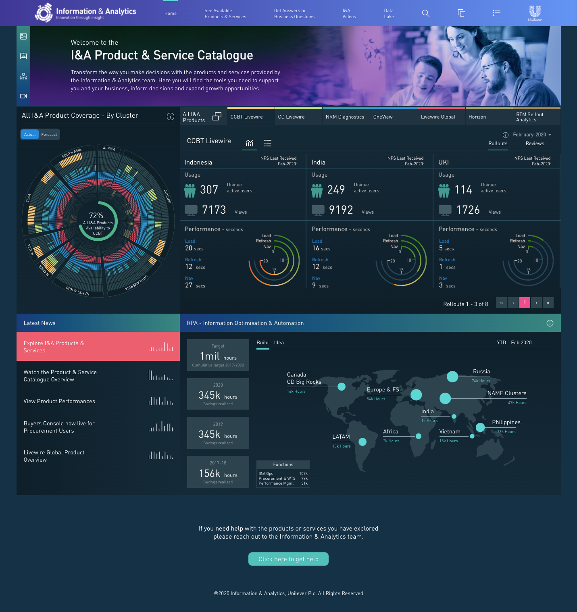
I&A Product & Service Catalogue dashboard
A catalogue for a large internal product ecosystem
Unilever's Information & Analytics team had a wide range of products and services available across the organisation. The catalogue brought those into a single application where internal teams could explore what was available, understand where products were used and navigate the data around coverage, usage, performance and KPIs.
That meant the application needed to do more than list products. It had to make a large amount of structured information usable, while giving product owners a practical way to maintain the data behind it.
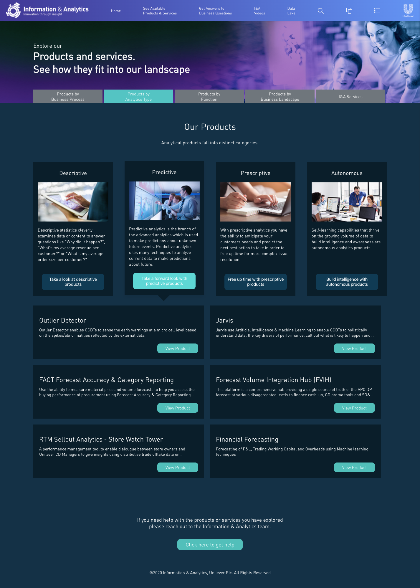
Browsing products and services by analytical type
Turning a lot of information into something navigable
A large part of the frontend work was about turning dense operational and product data into interfaces that people could actually explore.
The application was built in Vue.js, with Vuex handling application state and Axios connecting the frontend to the custom REST API. D3.js was used throughout the product for interactive visualisation, including product coverage, usage, KPIs, performance and the wider product landscape.
The challenge wasn't simply rendering charts. Different parts of the application needed to help people move from a high-level view of the I&A catalogue into individual products, business questions and the data associated with them.
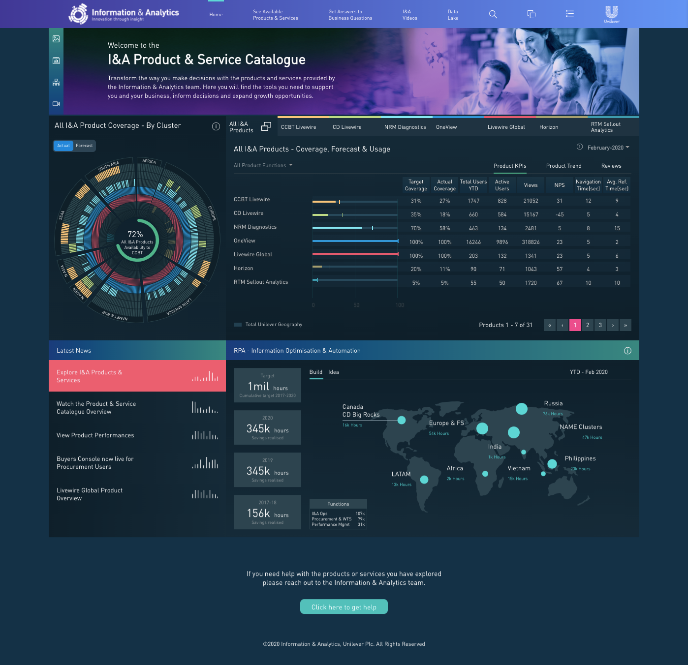
Dashboard combining product coverage, usage and performance data
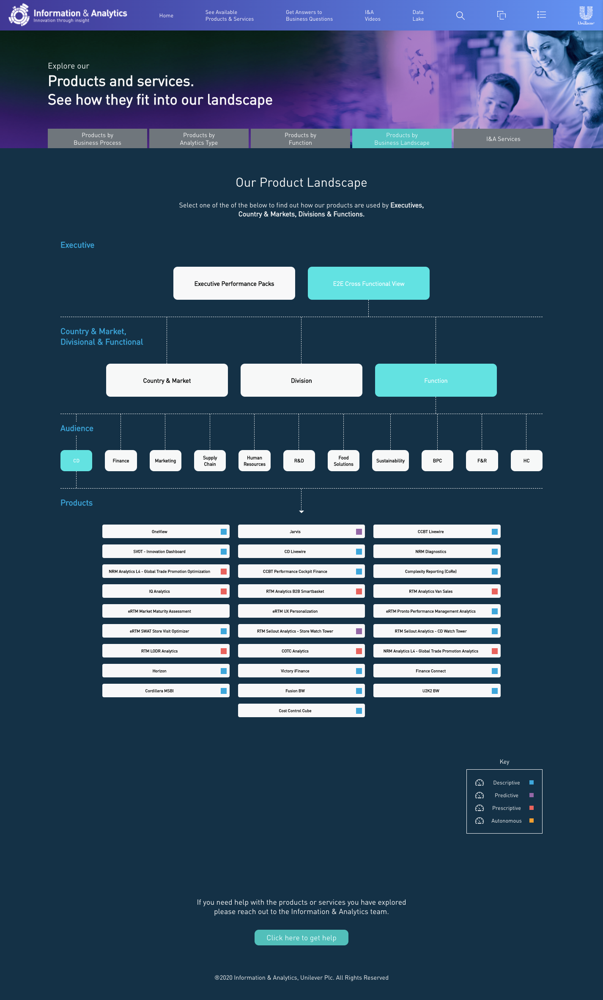
Interactive product landscape for exploring relationships across the catalogue
Different ways into the same product ecosystem
The catalogue supported several ways of finding and understanding products rather than forcing everything through a single directory.
Users could explore the wider product landscape, follow business questions towards relevant products, inspect product-level performance and KPIs, and move through supporting content such as videos and glossary information.
That variety is visible in the interface: the product needed conventional application views alongside much more bespoke data visualisation.
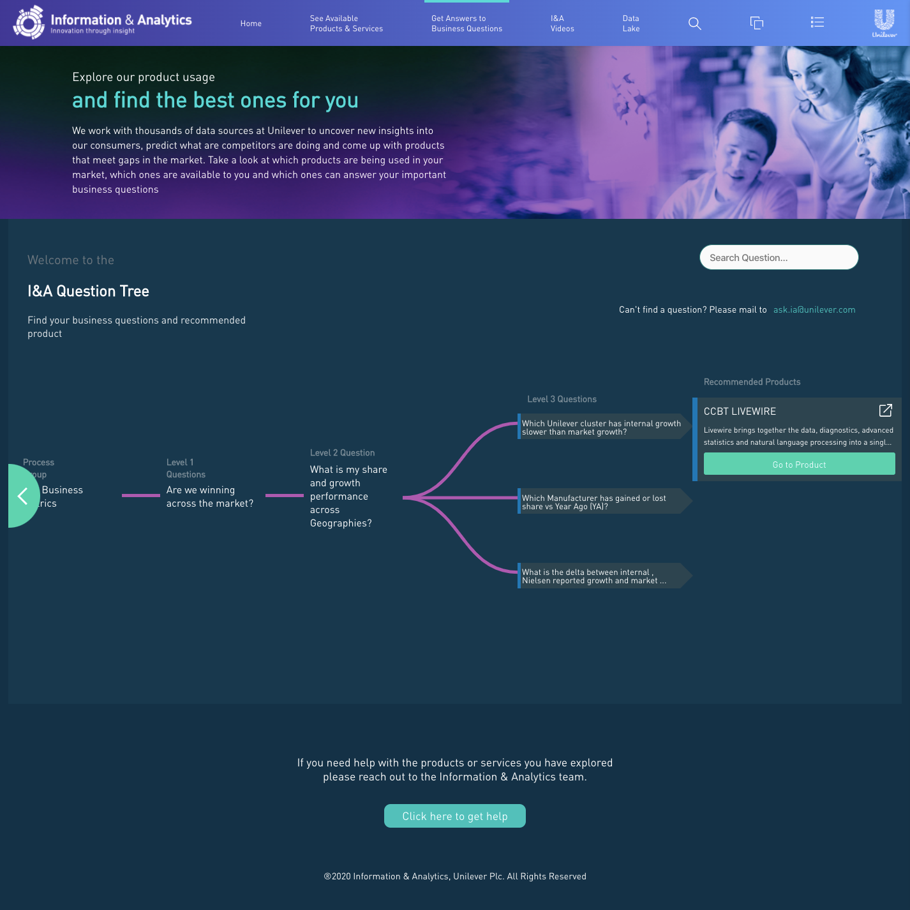
Business-question navigation leading users towards relevant products
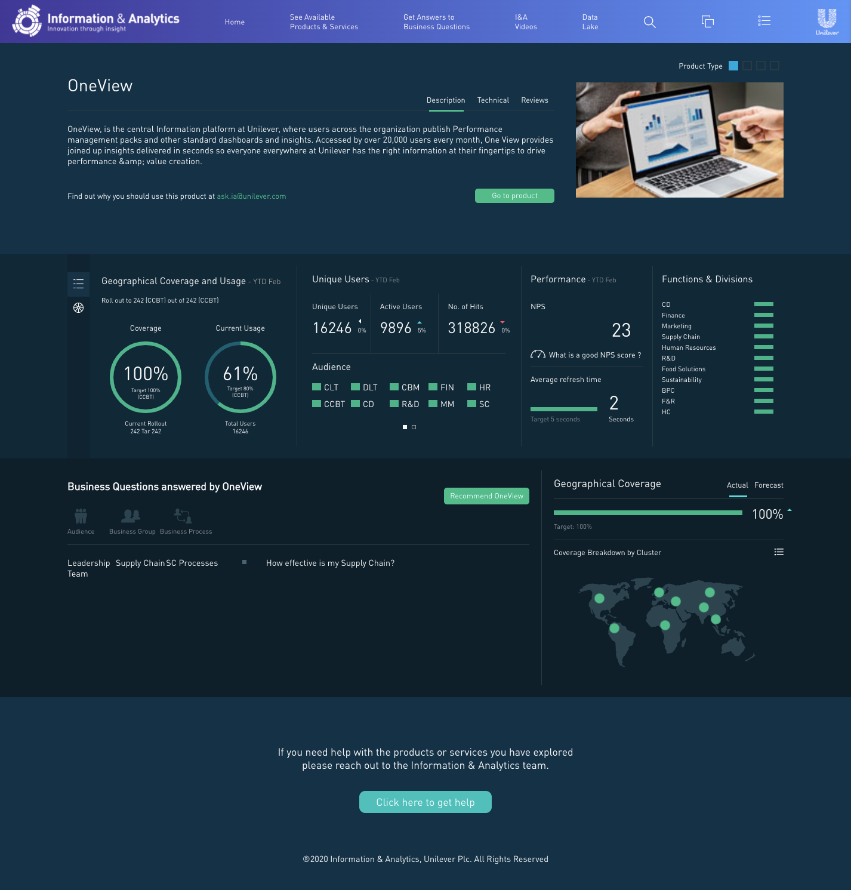
Individual product view bringing usage, performance and coverage into one interface
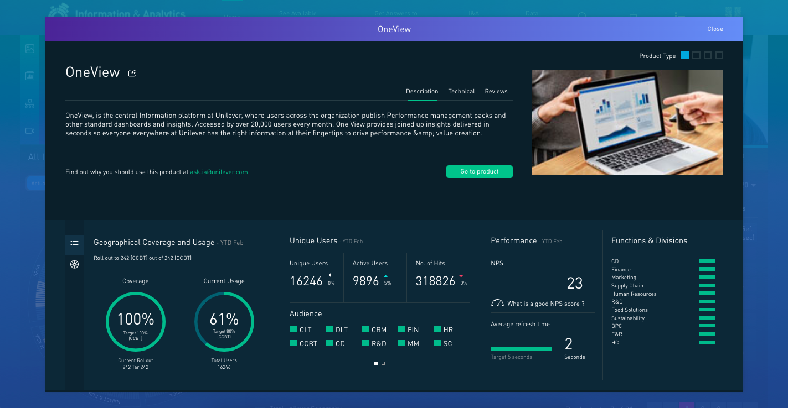
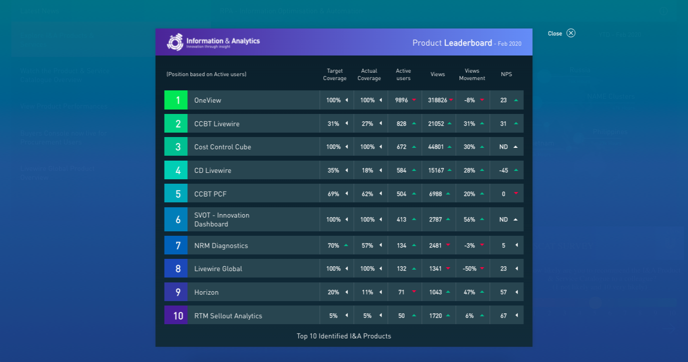
Additional KPI and product-performance views
The frontend was only one part of it
The application was backed by a custom Node.js and Express system with MySQL as the data layer. I created the REST endpoints consumed by the Vue application and built the CMS used to manage the information surfaced throughout the product.
This meant working across the boundaries between the user-facing application and the systems behind it: deciding how data needed to be exposed to the frontend, implementing the endpoints, building the CMS views that maintained it and then consuming that data back in the product.
The application and CMS were hosted using Azure web services.
Building the system behind the product
The catalogue needed to be maintainable by the people responsible for the products and services inside it, so I also built a custom CMS rather than treating administration as a separate project.
The CMS used Vue.js, Node.js, Express and MySQL and provided different levels of security and functionality for product owners across the different brand markets. Each view and component was built for the application, alongside the custom API endpoints consumed by the frontend.
Matomo was used for dashboard tracking, with generated reports pulled back into the CMS portal. The rest of the forms and management components were custom-built for the product.
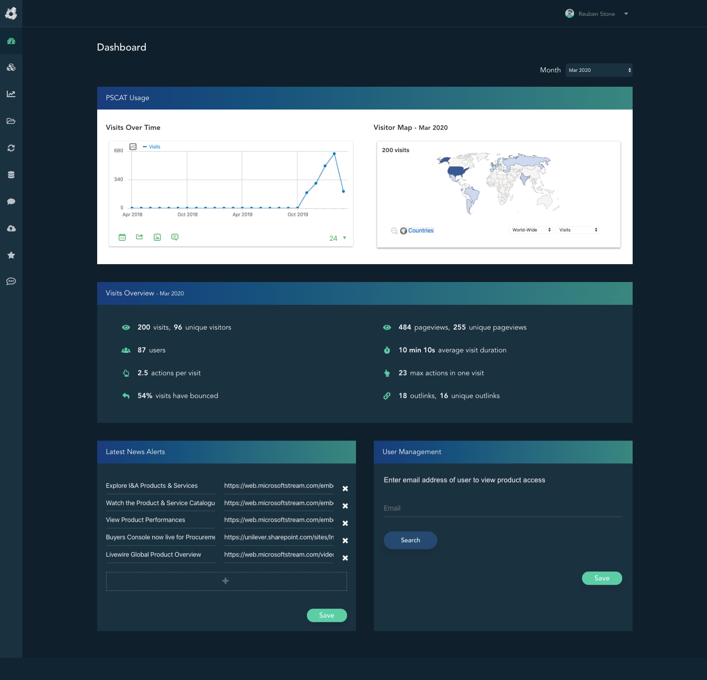
CMS dashboard for managing the catalogue

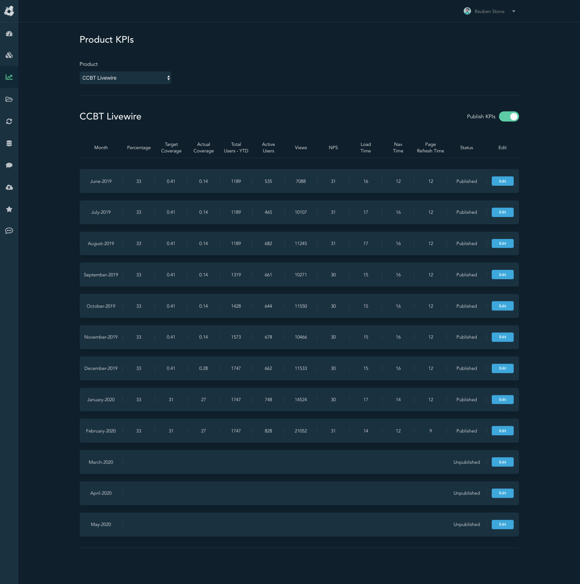
Product details and KPI management within the CMS
Documenting the system, not just shipping it
The project also included developer and user documentation for the application and API.
I documented the application overview, local/project setup, architecture and API endpoints so that the system could be understood and worked on beyond the initial build. For a product spanning a frontend application, backend, database, API and CMS, that documentation was part of making the work maintainable rather than an afterthought.
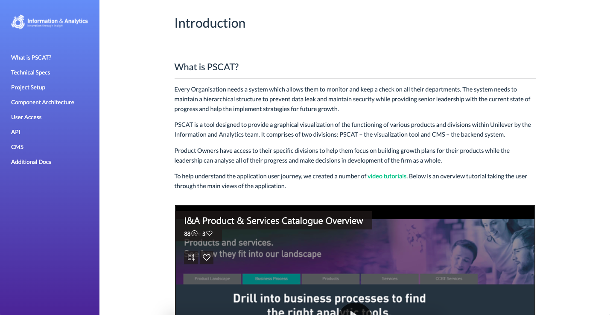
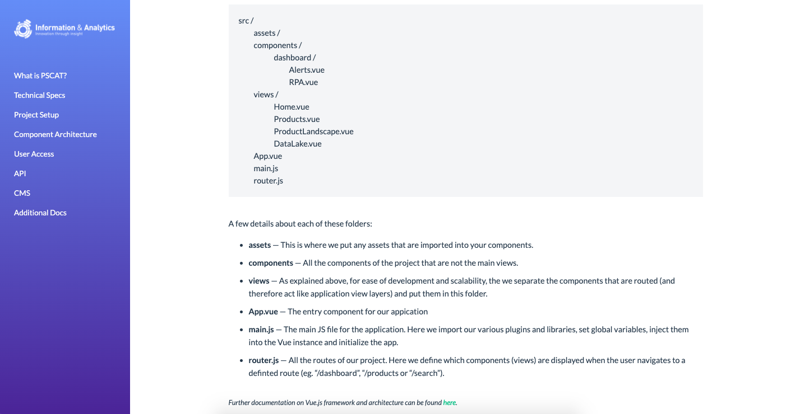
Application overview and API endpoint documentation
An early example of the way I still like to work
This project predates most of the React, TypeScript and AI work on my current portfolio, but the underlying way of working is familiar.
It meant understanding the product, building the user-facing application, creating the services and API behind it, shaping the data flow, building the tools needed to operate it and documenting the system for the people who came after me.
The technology has moved on. The part I still value is being able to follow a product problem across those boundaries rather than treating frontend, backend and operations as completely separate concerns.